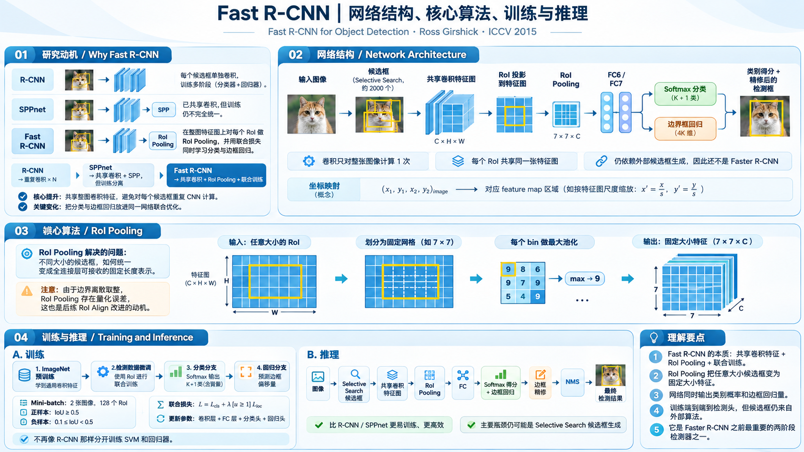

Fast R-CNN 算法原理研究笔记
SPPnet 已经解决了重复做卷积的问题，却仍然依赖分阶段训练，而且检测微调不能有效更新共享卷积层。Fast R-CNN 的突破是：保留整图特征共享，用 RoI Pooling 连接候选区域，并把分类与框回归放进同一个网络联合训练。
研究动机：SPPnet 已经很快了，为什么还要 Fast R-CNN？
这次的创新重点不是重新发明“共享卷积”，而是让训练方法与共享网络真正匹配。
逐候选框卷积
性能不错，但每个 RoI 都重新抽取 CNN 特征；CNN 微调、SVM 和回归分阶段完成。
整图共享卷积
显著减少推理卷积开销，但检测微调主要固定卷积层，仍采用多阶段训练。
共享特征 + 联合优化
将 Softmax 和 BBox 放在同一网络内，用共享 RoI mini-batch 让卷积层参与联合微调。
网络结构：从原始图像到两个预测向量
按照实际数据流理解每一步：输入是什么、如何转换、输出是什么。

1.1 候选框到底从哪里来？它和 Feature Map 有什么关系？
Fast R-CNN 的候选框，是神经网络从 Feature Map 上预测出来的吗？
不是。它仍使用外部候选区域算法（常见为 Selective Search）在原始图片上生成近似物体位置，输出的是像素坐标矩形，例如 (x₁, y₁, x₂, y₂)。另一条路径把整张原图送入 CNN，得到共享 Feature Map。两条路径在 RoI Pooling 处汇合。
这里为理解路线而上下拆开，RoI Pooling 的真实输入是 CNN Feature Map + 每个 RoI 坐标。两条图像入口表示同一张图，不是两张不同图片。
1.3 RoI Pooling：任意大小的区域，如何变成统一的 7×7？
比如狗头 RoI 对应 8×8 个特征网格，狗身体对应 14×13，为什么 FC6 都能接收？
RoI Pooling 先截取每个候选区域在 Feature Map 中覆盖的网格，按预设输出大小（VGG16 示例 7×7）将区域划成 7×7 个空间 bin；每个 bin、每个通道做一次 max pooling。于是，输入区域多大都可以得到 7×7×C 的固定形状。
不同大小 RoI 的特征网格。
上图显示单通道。多通道各自执行相同规则，再拼出 H×W×C 特征。
数值取自人工构造的激活矩阵，真实 CNN 还有 512 个通道。为了直观看到 bin，图中分区与边界量化作了简化；原始 RoI Pooling 也使用离散网格与取整，具体边界依赖实现。
1.4 为什么要两个预测分支？分类和回归各输出什么？
RoI Pooling 得到的特征经 FC6、FC7 之后分为两条并行分支。分类回答“这个框里是什么”，回归回答“如果是某类物体，这个粗框应该向哪里修正”。两个分支共同输入同一个 RoI 特征。
Softmax 分类：K + 1 个概率
若检测 K=20 个 VOC 物体类别，还需要一个背景类，因此输出 21 维概率向量。它替代了 R-CNN / SPPnet 推理时的单独线性 SVM。
边界框回归：每类 4 个偏移量
对 K 个物体类别分别输出 (tx, ty, tw, th)，总共 4K 个数。例如 VOC 20 类对应 80 维；背景类没有专属框回归输出。
回归值不是框的四个绝对像素坐标，而是相对候选框的中心平移和宽高对数尺度变化。
交互实验 B｜改变边界框偏移量，看到粗框怎样被修正
w′ = w·exp(tw)， h′ = h·exp(th)x,y,w,h 指候选框中心与宽高。这里演示回归偏移的几何含义；真实网络的训练目标还会做标准化处理。
完整训练：为什么它终于可以把 Conv 一起更新？
先从 ImageNet 预训练初始化，再用目标检测数据和 Multi-task Loss 进行一次联合微调。
ImageNet 预训练是初始化来源；检测阶段是一个联合优化流程，并不是从零训练所有参数。原论文在不同骨干配置下可冻结部分前段卷积层，所谓“可训练全网络”指训练机制支持梯度传到池化层之前，而不是每次实验都必须更新每一个参数。
2.1 Mini-batch 怎么构建？为什么同一张图采多个 RoI？
如果一个 mini-batch 有 128 个 RoI，难道真的需要做 128 次完整 CNN 前向与反向吗？
论文采用分层采样：先选 N=2 张训练图像，每张采样 64 个 RoI，得到 R=128 个 RoI。这样整图卷积前向只需分别计算 2 张图，批内来自同一张图的 RoI 共用特征，反向传播也聚合到这 2 张共享 Feature Map。
图 A · 64 个 RoI
16 个前景正样本 / 48 个背景负样本（按论文比例示意）
图 B · 64 个 RoI
16 个前景正样本 / 48 个背景负样本（按论文比例示意）
交互实验 C｜改变 IoU，理解这个候选框在训练中获得什么监督
前景
IoU≥0.5
计算
目标类别作为真实标签。
计算
仅前景目标具有定位监督。
这里展示的是原论文 fine-tuning 的候选采样规则，不是把所有产生的候选框都强制加入训练批次；实际按满足区间的候选采样。
2.2 Multi-task Loss：分类和框回归如何真正联合训练？
不是说有两个输出吗？损失怎么相加？背景框也计算回归吗？
每个 RoI 带有真实类别 u，当 u=0 时表示背景。分类头预测所有 K+1 类的 Softmax 概率；回归头预测 K 组偏移量。前景 RoI 同时产生分类与定位损失；背景 RoI 只有分类损失，没有对应的真实目标框，不计算回归损失。
pᵤ：真实类别 u 的预测概率；tᵘ：真实前景类别对应的 4 个预测偏移量；v：真实回归目标；[u≥1]：前景为 1、背景为 0；原论文取 λ=1。
交互实验 D｜实时计算同一个 RoI 的分类损失与定位损失
−log(pᵤ)：判断这个 RoI 属于什么
真实类别概率 pᵤ 越接近 1，交叉熵越接近 0；预测错误时损失变大。背景也是一个合法类别，参与该损失。
Smooth L1：为何不直接使用普通 L2？
smoothL1(x) = |x| − 0.5，其他
小残差平滑优化，大残差按线性增长，比纯 L2 对离群偏差更稳健。
2.3 RoI Pooling 能反向传播吗？来自不同框的梯度怎么合并？
可以。Max Pooling 的前向操作会为每个 bin 找到最大激活位置；反向传播时，梯度沿该最大值位置传回原 Feature Map。当多个 RoI 读取同一 Feature Map 时，各自传回的梯度在对应位置求和，再继续传入共享卷积网络。
示意图表达梯度流向，不代表一个真实实现里存在单独的“梯度汇总层”。数学上，池化反向会将每个输出位置的梯度汇到其 max 激活来源位置，重叠 RoI 的贡献在共享特征处累加。
完整推理：一张图片如何变成类别、分数与最终框？
和训练不同，推理不需要 GT、不计算 Loss、不做反向传播。
Selective Search 为输入图像提出约 2000 个候选区域；这一步仍是外部算法。
整张图通过 CNN；候选坐标映射到输出 Feature Map，并执行 RoI Pooling。
对每个 RoI 计算类别概率与各类回归偏移。把偏移解码回图像坐标。
每个类别根据得分筛选，并对大量重叠的预测框做非极大值抑制。
3.1 NMS 为什么仍是必要的？
Selective Search 的候选区域高度重叠。即使同一只狗被多个 RoI 检出，它们可能都得到很高的 dog 概率与相近的回归后框。NMS 按类别和得分排序，保留高分框，并抑制与它过度重叠的同类低分框。
交互实验 E｜阈值改变时，重叠的 dog 框还会保留几个？
NMS 状态
技术定位：Fast R-CNN 比 SPPnet 到底多做了什么？
沿同一技术主线对比，避免把 Fast R-CNN 和 Faster R-CNN 混为一谈。
| 问题 | R-CNN · 2014 | SPPnet · 2014 | Fast R-CNN · 2015 | Faster R-CNN · 2015 |
|---|---|---|---|---|
| 候选框是谁生成的 | 外部 Selective Search | 外部 Selective Search | 仍是外部候选 | 神经网络 RPN |
| 卷积是否共享 | 否：逐 RoI CNN | 是：整图/多尺度共享 | 是：整图共享 | 是：与 RPN 共享特征 |
| RoI 固定尺寸 | 原图裁剪拉伸 | 多级 SPP | 单层 RoI Pooling | RoI Pooling（原始版本） |
| 分类学习 | 独立训练 SVM | 独立训练 SVM | Softmax 联合训练 | Softmax 联合训练 |
| 边框回归学习 | 独立学习 | 独立学习 | 与分类联合优化 | 与分类联合优化 |
| 检测微调的 Conv | 可以更新，但逐框成本高 | 原始方案固定 Conv | 可经 RoI Pool 反传 | 检测主干可训练 |
| 主要剩余问题 | 大量重复卷积 | 分阶段训练与 Conv 微调限制 | 外部 proposal 生成开销 | 仍有 RoI 级计算与后处理成本 |
“可微调 Conv”不表示所有论文实验每层都非冻结。不同实验网络、尺度设置及训练策略会影响具体实现。
原论文的相对速度
相比 R-CNN，Fast R-CNN 的训练约 9× 快、测试约 213× 快；相比 SPPnet，训练约 3× 快、测试约 10× 快。
这些为论文特定配置、数据集和 K40 GPU 上的报告值，主要检测网络测试计时不计候选区域生成时间，不能当作当前硬件实时 FPS。
下一篇为什么轮到 Faster R-CNN？
Fast R-CNN 基本解决了“候选框如何用共享特征完成分类与定位”，但候选框本身仍由外部算法产生。Faster R-CNN 接着解决“能否让网络自己高效提出候选框”。
理解检验与论文依据
用四个判断检查自己是否理解了完整模型，而不是只记住层名称。
RoI 是从 Feature Map 学出来的吗？
不是。RoI 坐标由外部候选算法给出，CNN 产生特征；两者在 RoI Pooling 汇合。
RoI Pooling 为什么不会因输入框大小而改变 FC 参数规模？
每个候选区域划成固定 7×7 个 bin，逐通道池化；输出始终 7×7×C。
Fast R-CNN 与 SPPnet 关键差异是什么？
两者都有共享卷积，但前者把 Softmax 和 BBox 放到同一个网络联合训练，并能向卷积主干高效反传。
背景样本为什么没有回归损失？
背景不是某个有 GT 的物体框。它要学会被识别为背景，但没有正确的物体目标框可供回归。
Ross Girshick. Fast R-CNN. ICCV 2015, pp. 1440–1448. CVF 官方论文页面 · 原论文 PDF · 官方代码仓库
依据原论文第 2 节网络架构 / RoI Pooling、第 2.3 节 Multi-task Loss、Mini-batch sampling 与 RoI Pooling 反向传播；速度数字依据论文摘要及实验部分。本文中的狗示意、特征激活、回归滑块、IoU 和 NMS 示例为教学计算，并非论文实验数据。